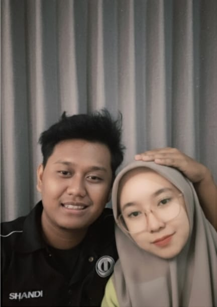
Anniversary ke-4
Shandi Kurnia Illahi ♥ Agis Agistianah
Selamat anniversary, 4 tahun bersamamu
Sejak 15 September 2022, kamu jadi rumah ternyaman untukku. Terima kasih sudah bertahan dan membuat setiap hari terasa hangat.
Perjalanan kita
Dimulai 15 September 2022, dan jalannya masih panjang
Waktu yang sudah kita lewati bersama
Momen favoritku
Setiap foto menyimpan cerita kecil tentang kita
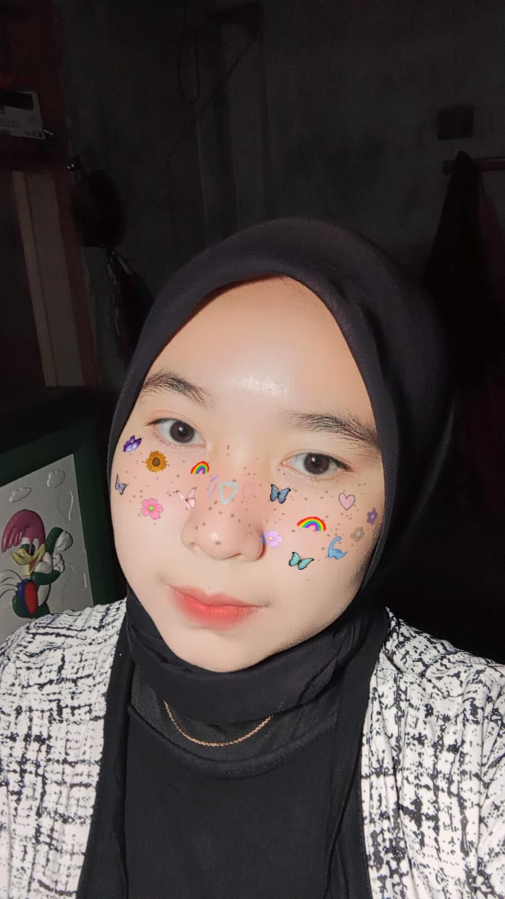
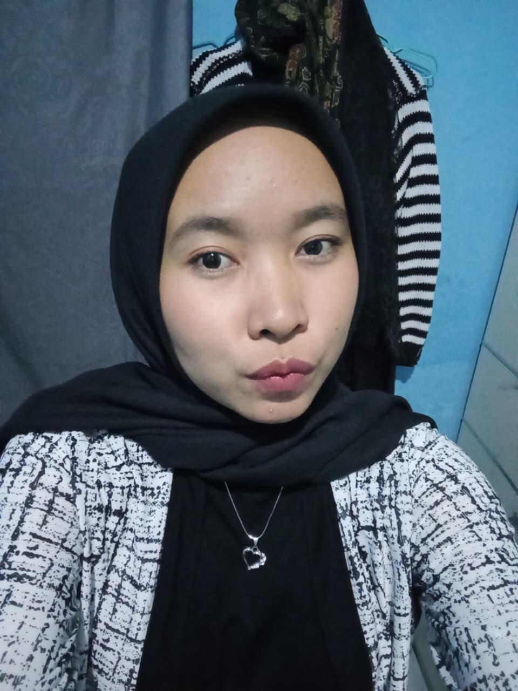
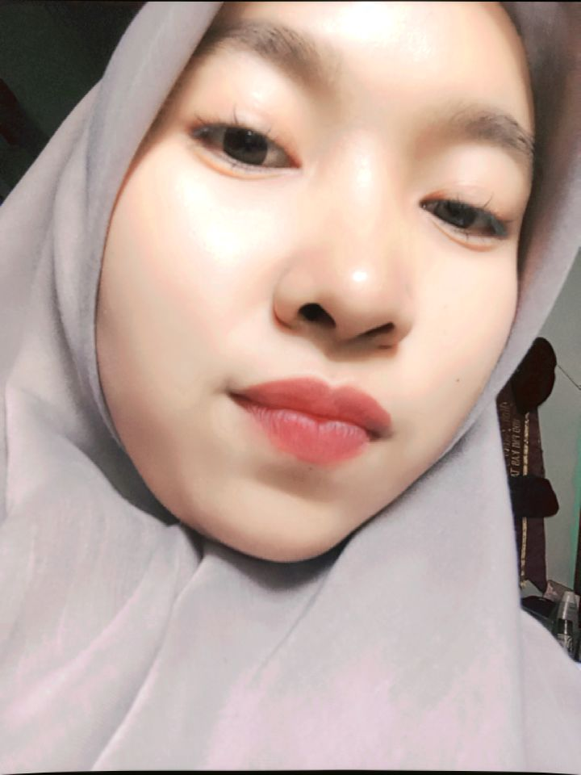
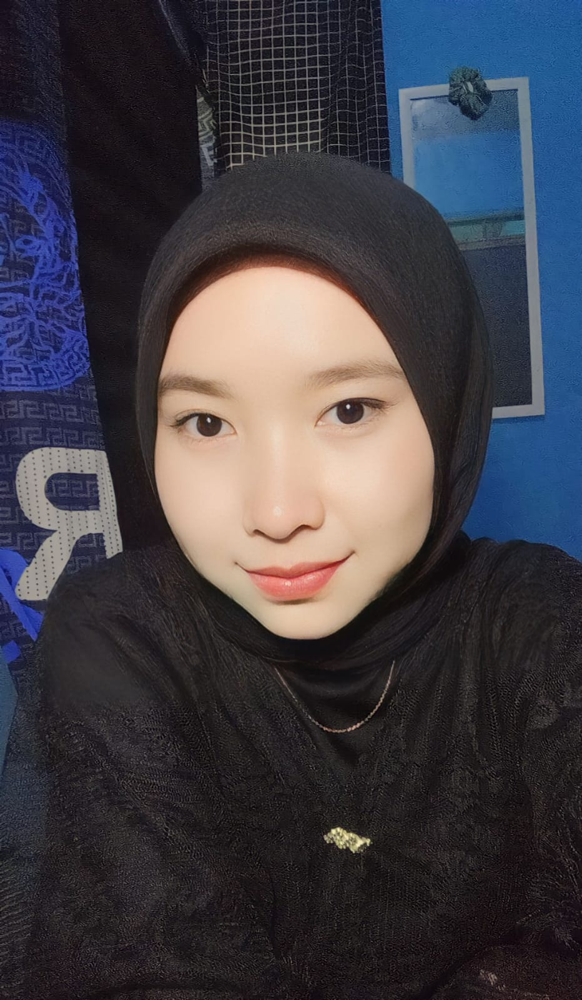
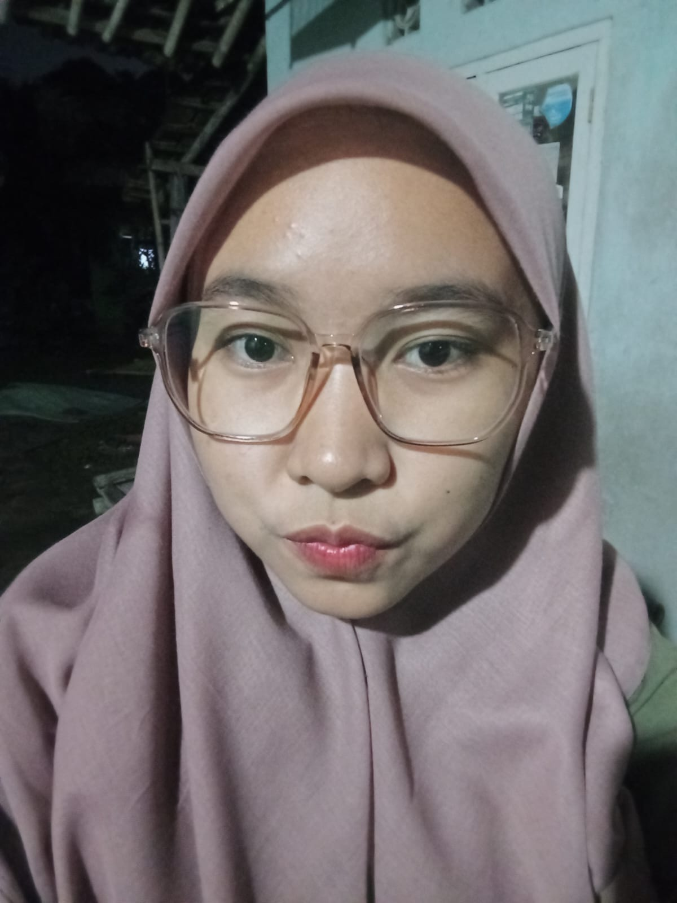
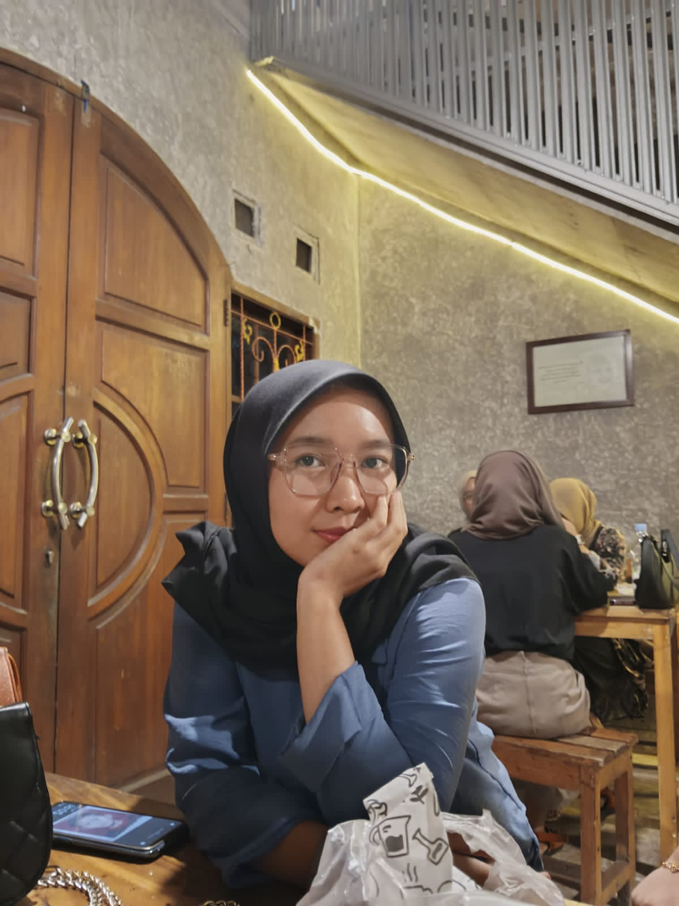
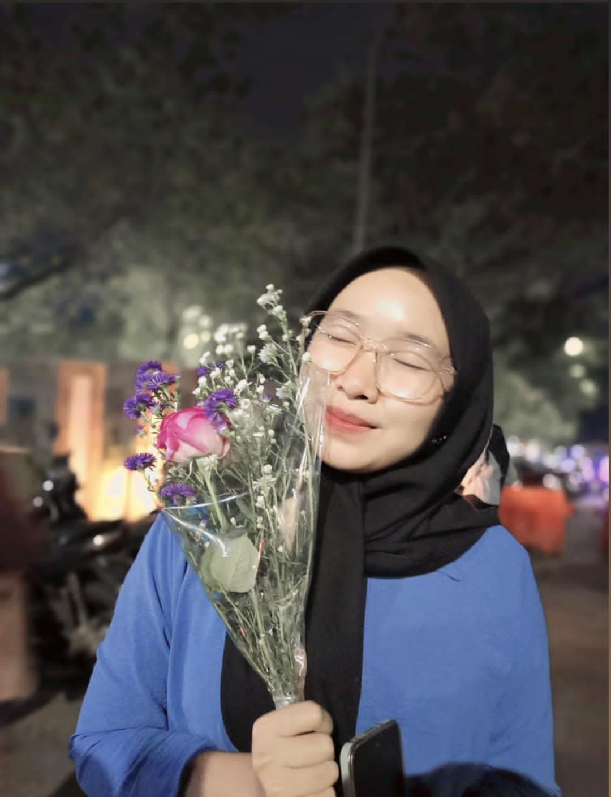
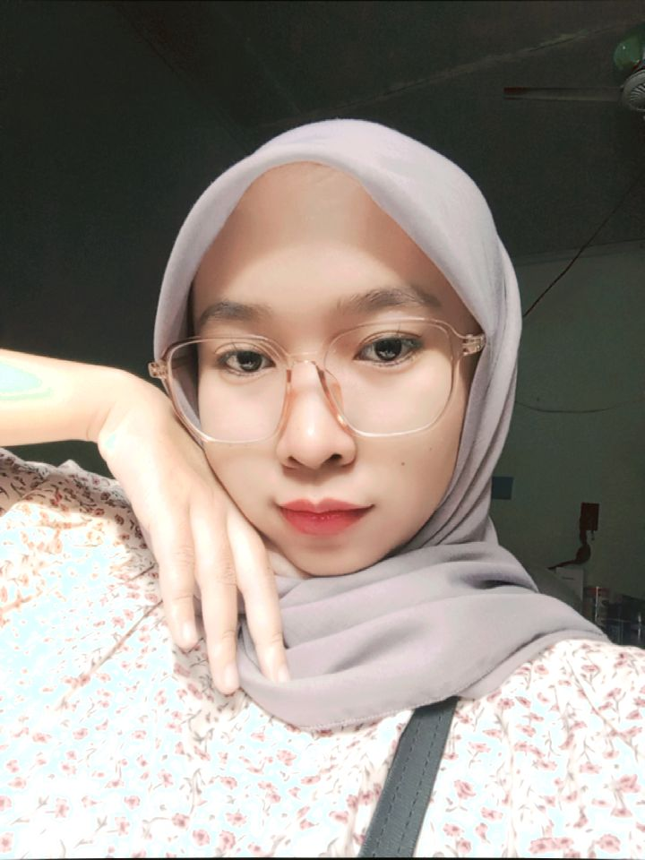
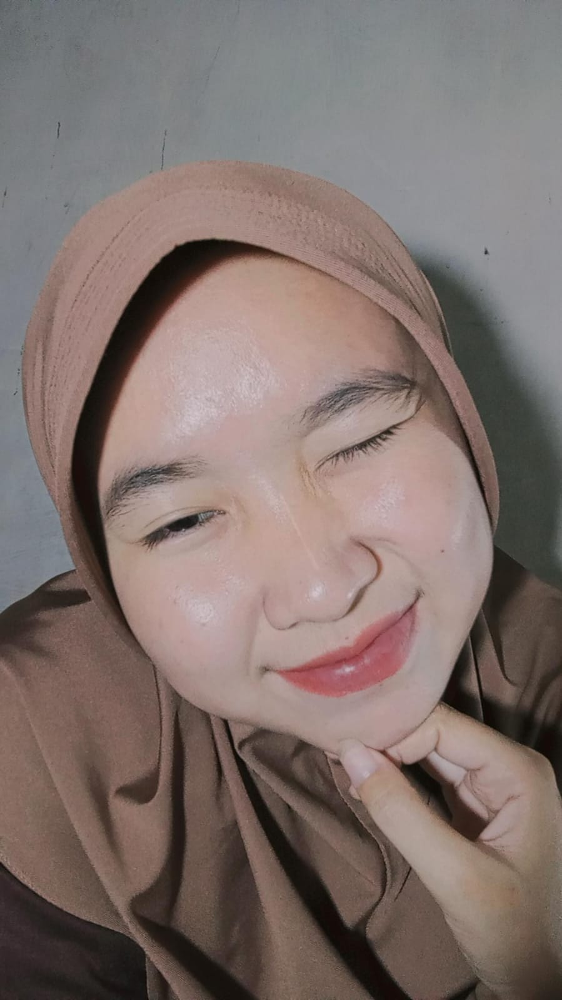
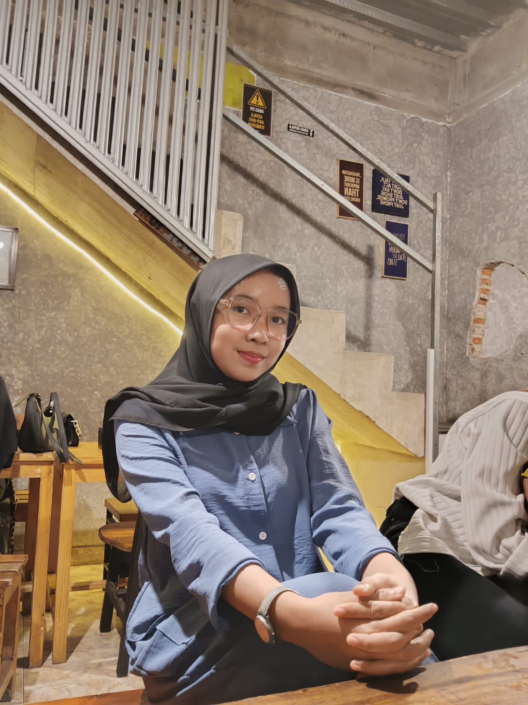

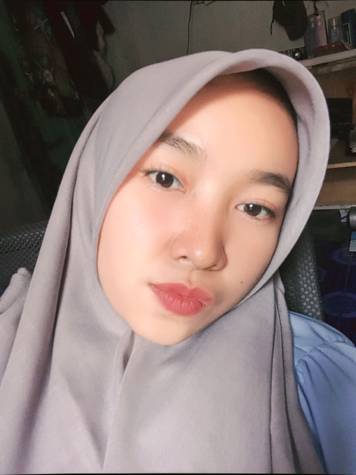
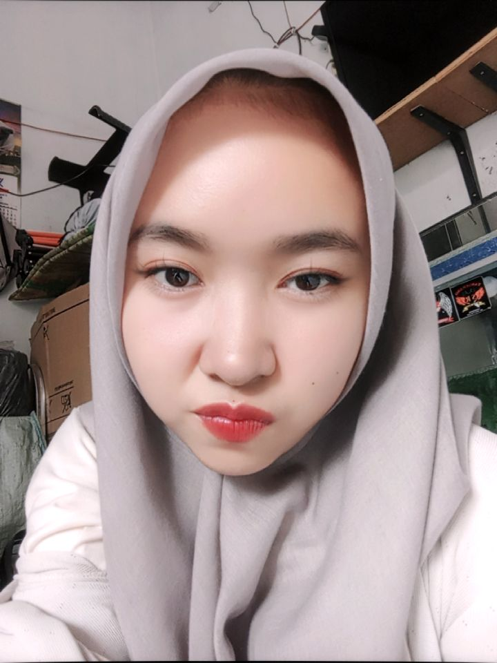
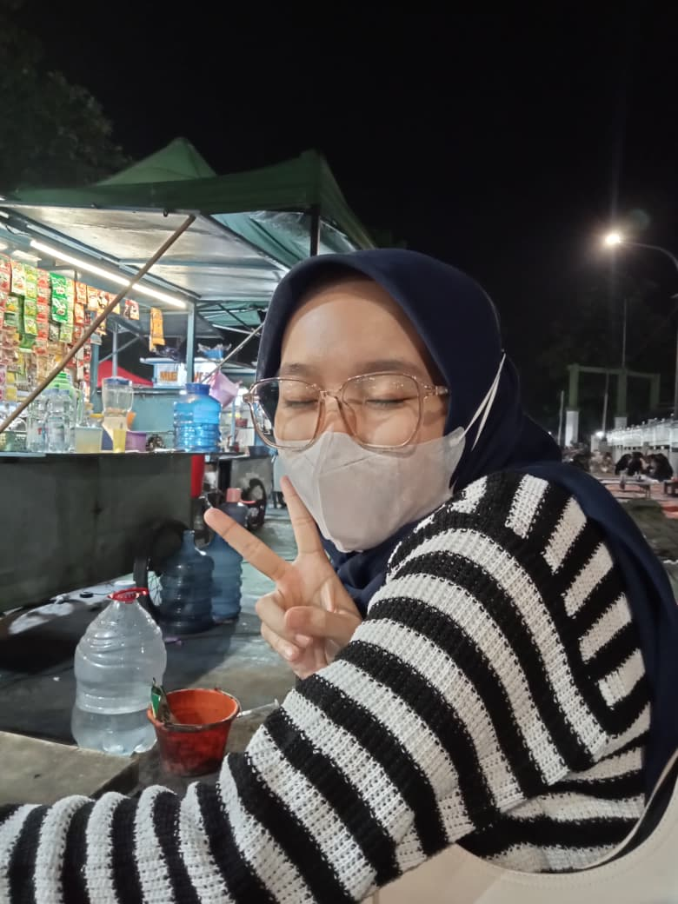
Kata-kata untukmu
Yang ingin selalu kuucapkan, Agis
Aku nggak pernah bosan mengenalmu, karena setiap hari selalu ada alasan baru untuk jatuh cinta.
Sedikit isi hatiku
Kata-kata yang sering tertahan
Sayang, aku mungkin bukan orang yang paling pandai merangkai kata, tapi aku ingin kamu tahu bahwa kamu adalah rumah ternyaman untukku.
Di hari yang berat, ingat bahwa ada aku yang selalu di sisimu. Di hari yang bahagia, aku ingin menjadi orang pertama yang merayakannya bersamamu.
Terima kasih sudah memilihku, dan aku akan terus memilihmu.
Yang selalu sayang kamu